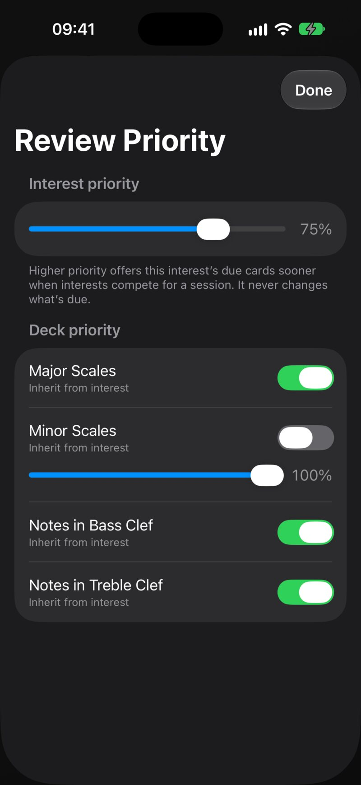
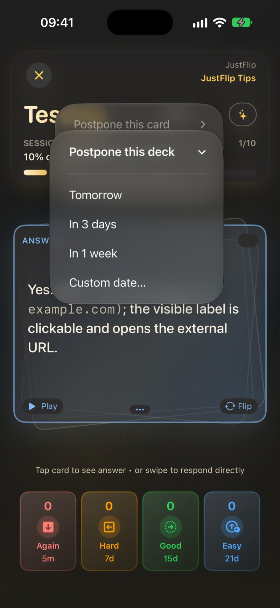
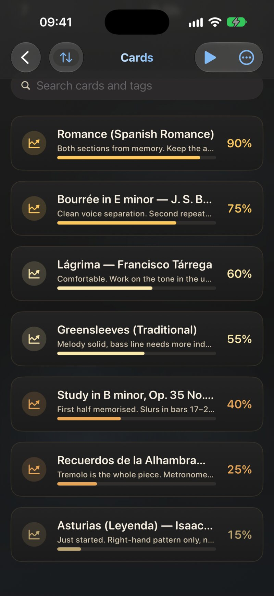

6.1 The idea in one minute
Memory fades on a curve. Right after you learn something you forget it quickly, and each time you remember it again the curve gets flatter. Spaced repetition makes use of that: it shows you a card just before you would have forgotten it. Each successful recall pushes the next review further out.
In JustFlip! every card carries three numbers:
| Number | What it means |
|---|---|
| Interval | How long until the card comes back, from minutes to months |
| Ease | How fast the interval grows for this card. It starts at 2.5 |
| Due date | The moment the interval runs out and the card is ready again |
Your grade after each flip changes the ease and the interval, and the due date follows. The grade buttons show the interval each choice would give, so nothing happens behind your back. After you grade, a short Next: … hint confirms when you’ll see the card again.
6.2 The five stages
Every card is in one of five stages. The stage is a label that describes the card’s interval. It doesn’t decide the interval.
| Stage | Meaning | Typical interval |
|---|---|---|
| Unseen | Never studied | — |
| Learning | Freshly learned, or forgotten from Reviewing | minutes to a few days |
| Reviewing | The interval has reached 7 days | one to four weeks |
| Graduated | The interval has reached 30 days | months |
| Relearning | A Graduated card you forgot | short steps again |
Unseen ──grade──▶ Learning ──7 days──▶ Reviewing ──30 days──▶ Graduated
▲ │ │
└─────── Again ───────┘ Again │
▼
RelearningWhat moves a card between stages:
- Any grade takes an Unseen card into Learning.
- Hard, Good or Easy move a card up once its new interval crosses a threshold: 7 days makes it Reviewing, 30 days makes it Graduated. Stages follow the interval, so an Easy grade on a new card doesn’t graduate it on the spot. It still has to earn its 30 days.
- Again sends a Learning or Reviewing card back to Learning, and a Graduated card to Relearning. Either way the interval drops to 5 minutes.
The Statistics screen counts your cards by stage, under Collection: New, Learning (which includes Relearning), Reviewing and Graduated. Chapter 9 covers the rest of that screen.
The Mastery percentage on a deck or an interest counts the cards whose last grade was Good or Easy. It isn’t the share of Graduated cards. A deck can show high mastery after one good session, long before anything graduates. Mastery tells you how you did recently. The stages tell you how settled the knowledge is.
6.3 Intervals and ease
6.3.1 The first grade
A card you have never graded, or one you just forgot, starts from fixed first steps:
| Grade | Next review |
|---|---|
| Again | in 5 minutes |
| Hard | in 20 minutes |
| Good | in 1 day |
| Easy | in 4 days |
6.3.2 Every grade after that
From then on, each grade works from the interval the card already has:
- Again starts over: 5 minutes, and a lower ease.
- Hard grows the interval a little, by 20 %, and lowers the ease.
- Good multiplies the interval by the card’s ease: about 2.5× for a typical card.
- Easy multiplies by the ease and a bonus of 1.3, and raises the ease.
Ease is the card’s own growth rate. Every Hard and Again makes a card grow more slowly from then on. Every Easy makes it grow faster. Ease never drops below 1.3 or rises above 3.5, so a difficult card still moves forward, just in smaller steps.
Here is a new card that you answer Good every time:
| Review | Interval | Stage after it |
|---|---|---|
| 1st | 1 day | Learning |
| 2nd | 2.5 days | Learning |
| 3rd | about 6 days | Learning |
| 4th | about 16 days | Reviewing |
| 5th | about 39 days | Graduated |
Five successful reviews spread over about two months, and the card comes back only every month or more.
Intervals of two days or more get a small random nudge of up to ±10 %. Cards you learned together on the same evening would otherwise come back together forever, as one big lump in your calendar. The nudge spreads them over neighbouring days. The grade buttons always show the interval before the nudge, so the real date can differ by a day or so.
JustFlip! uses a variant of SM-2, the algorithm behind SuperMemo and Anki. With ease E and current interval I, a grade first updates the ease, clamped between 1.3 and 3.5:
for Again, Hard, Good and Easy. Then the new interval for a card that is already under way is:
Again always gives 5 minutes. Intervals of two days or more are then multiplied by a random factor:
6.3.3 Smart Schedule (Pro)
Under Settings › Behavior, the Smart Schedule switch (marked BETA) replaces the SM-2 intervals with FSRS-5, a modern scheduler. FSRS schedules each review for the moment your chance of remembering the card drops to about 90 %. The aim is fewer reviews for the same retention. It only changes the intervals for Hard, Good and Easy. Again still brings a card back after 5 minutes.
JustFlip! keeps its SM-2 values up to date either way, so you can switch Smart Schedule off at any time and nothing is lost. It is a Pro feature. Without Pro, tapping the switch opens the Pro screen instead.
6.4 What “due” means
A card is due once its due date has passed, unless you retired it or postponed it. Retired cards (Chapter 2) and postponed cards (see Postponing) keep their schedule. They just don’t come up while they are set aside.
Cards you have never studied aren’t due. They are new. The Today session mixes the two: first the due cards, then fresh ones from your daily allowance. The defaults are 20 Cards per session and 10 New cards per day, both under Settings › Behavior.
6.4.1 Which cards come first
In the Today session and in the Decks screen’s review menu, JustFlip! builds the queue like this:
- Oldest first. Cards that became due on an earlier day come before cards that became due later.
- A daily shuffle inside each day. Cards due on the same day are mixed in an order that changes every day. That way a short session doesn’t always pick the same front slice of a big backlog.
- Decks take turns. Each deck’s cards are merged with the others in turns, weighted by priority (see Review priorities).
- New cards last, up to what is left of your daily allowance and the session size.
- Image occlusion siblings are spaced apart, so two cards from the same picture don’t come up back to back.
A review you start from a single deck’s card list shuffles that deck’s due cards.
A card you grade Again is due again in 5 minutes, but it doesn’t reappear later in the session you’re in. You’ll meet it in your next session. If you want a second try straight away, finish the session and start another one after a few minutes.
6.4.2 Urgency
Interests and decks also get an urgency score, which drives the coloured indicator in the lists and the By Urgency sort. It blends several signals. The biggest ones are the share of cards due and how overdue the oldest card is. Smaller ones are how long ago you studied the deck, low mastery, and a few new cards. Retired and postponed cards don’t count. For a few hours after you study a deck its urgency stays at zero, so the indicator doesn’t flare up because of 5-minute re-queues.
Settings › Review pace changes how quickly urgency climbs: Relaxed (slowly, with smaller first batches), Steady (the default) or Intense (quickly, with the full queue visible). Review pace never changes the intervals themselves.
6.5 Review priorities
When you have more due cards than time, priority decides whose cards you see first. Every interest has a Learning priority from 0 % to 100 %, in steps of 5 %. It starts at 75 %. Each deck Inherit from interest by default, or sets its own value.
Set it in any of three places:
- An interest: press and hold it in the Interests list, choose Edit Interest and move the Learning priority slider.
- A deck: press and hold it, choose Edit Deck, switch off Inherit from interest and move the slider.
- All of an interest’s decks at once: on the Decks screen, open the Deck options menu (the folder icon) and choose Review Priority. The sheet shows the Interest priority slider and, under Deck priority, one row for each deck.

6.5.1 How the mix works
Priority changes the order of the queue, not its contents. Think of each deck as dealing its due cards in turns. A deck with twice the priority deals twice as often:
| Deck | Priority | Order of its cards in the session |
|---|---|---|
| Spanish | 100 % | 1st, 3rd, 4th, 6th, 7th … |
| Chemistry | 50 % | 2nd, 5th, 8th … |
With the default of 75 % everywhere, decks simply alternate, one card each. A higher priority wins more of a capped session, and a lower one gets pushed towards the end.
Even at 0 % a deck’s due cards are still due. They are only offered after everything else. Due counts on the widget, in Today and on the Decks screen stay exactly the same when you move a slider. Priority only matters when a session is capped: in Today and in the Decks screen’s review menu. A review of a single deck has nothing to compete with.
6.6 Postponing
Sometimes a card isn’t wrong, it’s just not the right moment: exam week for another subject, a holiday, a deck you’ll get back to next month. Grading Again or Hard would damage its schedule. Postponing puts it on hold instead, without touching the schedule at all.
6.6.1 How to postpone
During any review, tap the Postpone button (the clock icon at the top of the review screen). Choose the scope:
- Postpone this card
- Postpone this deck
- Postpone this interest
Then choose for how long: Tomorrow, In 3 days, In 1 week, or Custom date… to pick a day under Resume on. A hold lasts until the start of that day, so “Tomorrow” means all of tomorrow, not 24 hours from now.

The held cards leave the running session right away. If you postpone the deck or interest of a single-deck review, the session ends, because there is nothing left to review.
6.6.2 What a hold does
A hold is a pure filter. Nothing is graded, the interval and ease stay as they are, and the card’s history doesn’t change. While the hold lasts:
| Where | Postponed cards |
|---|---|
| Today, the widget, due counts and the forecast | left out |
| Due Cards and Struggling Cards | left out |
| New Cards (Decks screen menu) | left out, even if never studied |
| All Cards | included |
If a card, its deck and its interest are all on hold, the latest date wins.
6.6.3 How to release a hold
Holds end by themselves on the date you chose. To end one early, open the Decks screen of that interest and choose Deck options › Review Priority. While anything is on hold, the sheet has a Postponed section with the number of held cards and a button for each active hold:
- Resume this interest now
- Resume deck name now, one for each held deck
The Postponed section lists interest and deck holds only. A hold on a single card counts in the total but has no Resume button. It simply runs out on its date. To shorten it, open the deck’s All Cards review, which ignores holds. When the card comes up, postpone it again with Tomorrow.
All Cards deliberately includes retired and postponed cards. Use it the night before an exam, or when you want to go through a postponed deck anyway. Your grades there count like any others.
6.7 Progress trackers (Pro)
Some skills don’t fit on a flashcard: a piece you’re practising on the piano, a climbing technique, a book you’re working through. A progress tracker is a special card with a name, optional notes and a progress bar that you set yourself.
To add one, open a deck, tap the More actions menu and choose Add Progress Tracker. The first time, a short introduction explains the idea. Give the tracker a name (What are you tracking?) and, if you like, notes. Later, tap the tracker and move the Progress slider, from 0 to 100 in steps of five, to match how far along you feel.

What a tracker does and doesn’t do:
- It is never reviewed. Trackers stay out of every review session, Today, due counts, the Statistics stages and Speak Cards.
- It doesn’t count towards your streak. Nobody quizzes you, so there is nothing to count.
- It does count towards deck mastery. A flashcard adds 1 to the deck’s mastery when its last grade was Good or Easy. A tracker adds its own progress: 60 % adds 0.6. A deck that holds only trackers shows their average progress as its mastery.
A tracker says exactly what you tell it, nothing more. That is the point, but it also means a tracker set to 100 % pulls a deck’s mastery up as much as a card you really know. Be honest with the slider.
Progress trackers are a Pro feature. Without Pro, the menu item carries a lock and opens the Pro screen. Trackers you already have are kept safe. In their place the deck shows a single row saying how many trackers it holds, and they come back as soon as Pro is active again.
6.8 Retired cards
Retiring a card (“I know this, stop testing me”) takes it out of Due and Struggling without deleting its history. It is explained in Chapter 2. For scheduling, remember two things:
- A retired card keeps its interval, ease and due date. Reactivate it and it picks up exactly where it stopped.
- A retired card still counts towards mastery, but it no longer counts towards urgency or due counts.
6.9 Quick reference
| Setting or value | Where | Default |
|---|---|---|
| First steps (Again / Hard / Good / Easy) | built in | 5 min / 20 min / 1 day / 4 days |
| Starting ease | built in | 2.5 (range 1.3–3.5) |
| Reviewing / Graduated | built in | interval ≥ 7 / ≥ 30 days |
| Cards per session | Settings › Behavior | 20 |
| New cards per day | Settings › Behavior | 10 |
| Smart Schedule (Pro) | Settings › Behavior | off |
| Review pace | Settings › Review pace | Steady |
| Learning priority | Edit Interest / Edit Deck / Review Priority | 75 %, decks inherit |
| Postpone | review screen, clock icon | — |
| Retire suggestion | results screen | interval ≥ 90 days and 4 correct in a row |